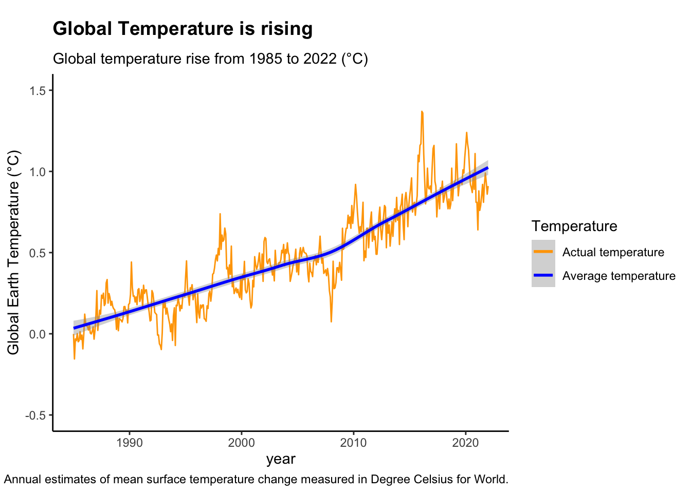
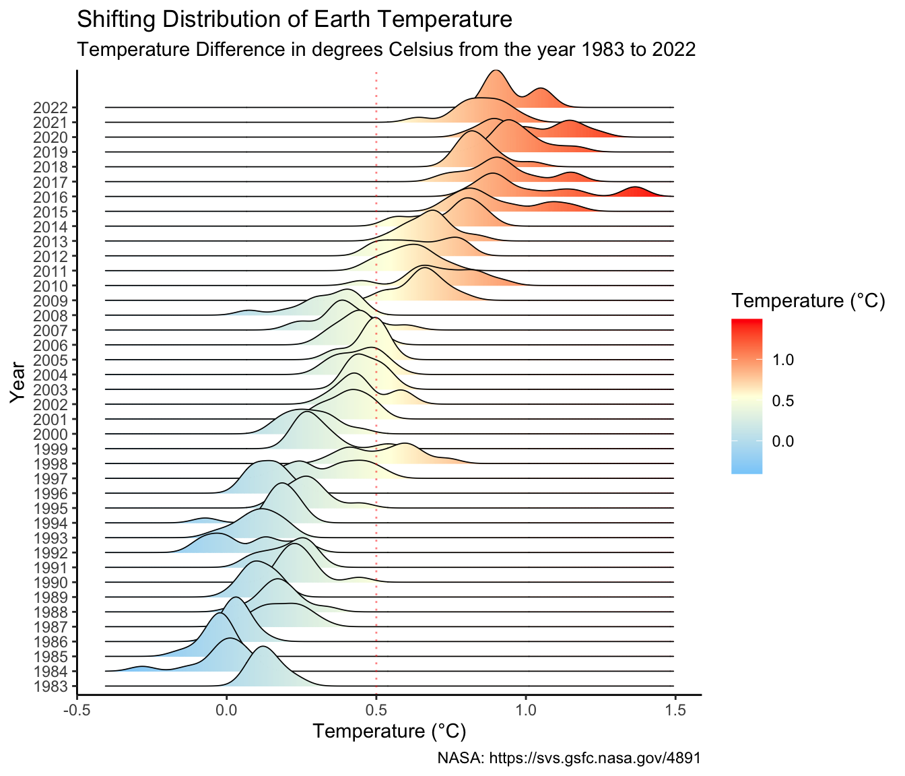
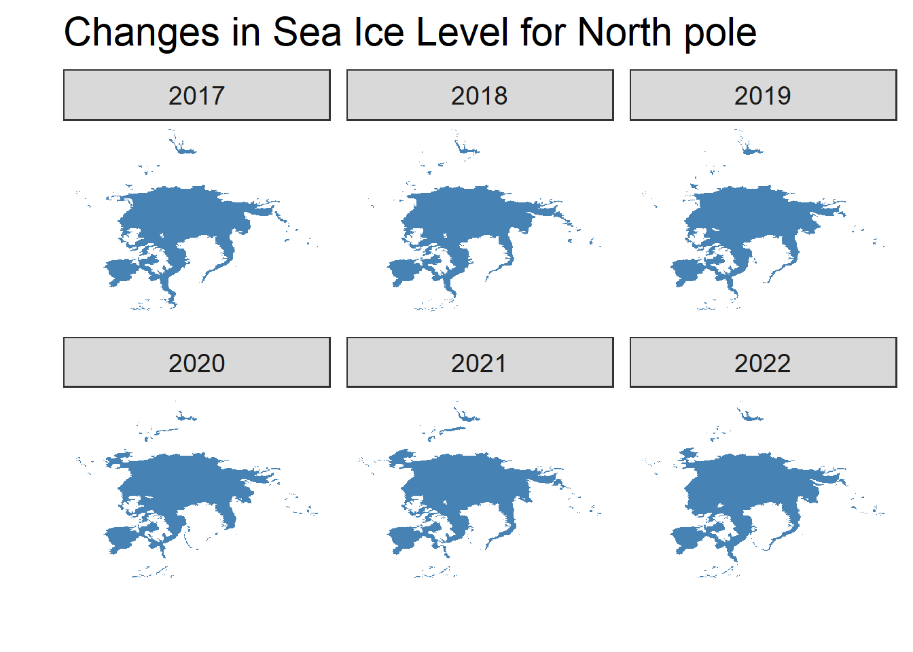
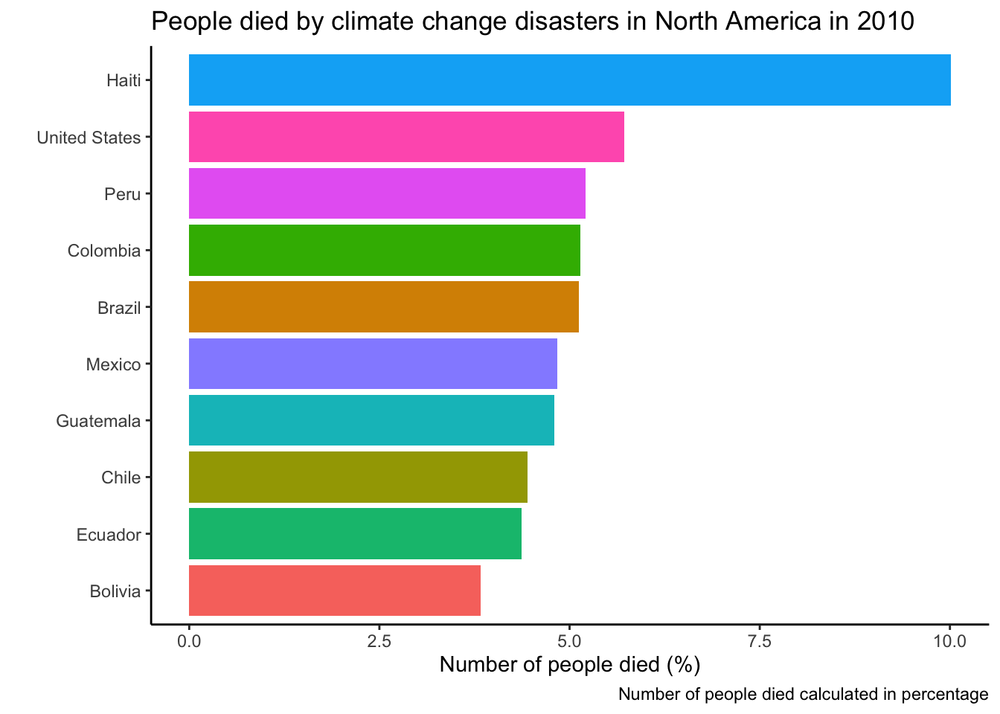
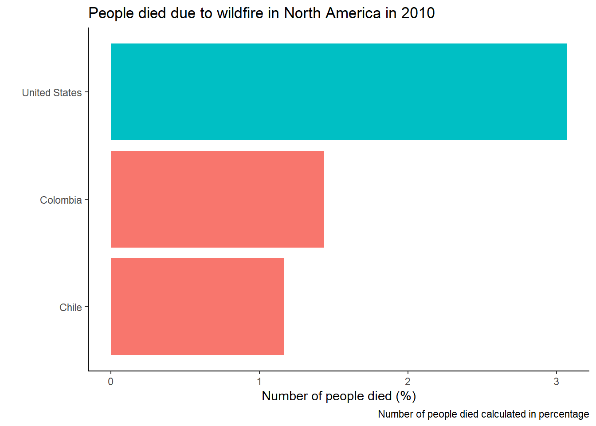

The Earth’s climate is changing in unprecedented ways, according to scientists. Since the Industrial Revolution, the global average temperature has risen by one degree Celsius. Although this may not appear to be much, it has already had a significant impact on how our planet functions. This data visualization report assists us in answering three major questions: the causes and effects of climate change, the trend of natural disasters caused by global warming, and the climatic change in relation to Children Climate Risk Index (CCRI) data.
Natural disasters have been exacerbated by climate change. Drought, heatwaves, flood, fog, wildfire, and glacial lake are some of these disasters. People all over the world have been affected by these natural disasters. According to the analysis, Asia is the most affected by most climate-related disasters, with China being the most affected by extreme temperature and flooding. Furthermore, North America has the highest number of deaths from climate-related natural disasters, with Haiti having the highest number of deaths on the continent. In addition, Southern Asia has the highest number of people who have become homeless as a result of these natural disasters, with India being the most affected. Surprisingly, the continent with the greatest impact (30%) is North America.
The CCRI index seeks to identify which countries or regions are at risk of humanitarian crises affecting children and child deprivation worsening as a result of their vulnerability to climate and environmental shocks or pressures. According to the CCRI map, children in the Central African Republic (8.7), Chad (8.5), Nigeria (8.5), Guinea (8.4), and Guinea-Bissau (8.4) are the most vulnerable to climate change effects, while children in New Zealand (1.6), Luxembourg (1.5), and Iceland (1.0) appear to be the safest.
As a result of enormous global environmental, sociological, and economic disruption brought on by climate change, the world is approaching an unprecedented period. By investigating and analyzing the sources of greenhouse gas emissions brought on by the industrial revolution, we can help and protect society in general and children in particular.
Policymakers must develop better listening skills and incorporate the viewpoints and experiences of young people into climate policies and processes in order to confront this catastrophe.
2 Introduction
Climate Science has become an intimidating subject matter which is drawing attention in recent days. It is evident that human activities are driving the global warming since mid-20th century. The industrial activities that our modern civilization has taken up leads to raised atmospheric carbon dioxide levels.
UN Climate change states that the past seven years were the warmest on record. Countries that host billions of people and are responsible for up to 70% of human-caused emissions are predicted to get affected the most. This leads to increasing socio-economic impacts. Consequently, making populations vulnerable to extreme weather in different parts of the world.
Climate impacts heading into uncharted territory of destruction by increasingly devastating and leading to many natural calamities. This report will unveil the most inquisitive questions arising which causes and mechanism in global warming along with the human activities leading to natural changes in the environment. As a consequence how humankind is affected, especially children. This study will address the following questions,
What is the mechanism behind the occurrence of climatic change?
Emissions of greenhouse gases over a period of time due to industrial revolution.
Descriptive statistics on factor facilitating Climate change.
Study the trend in natural disaster due to global warming.
Analysis on children vulnerability to climatic change with respective to Children Climate risk index(CCRI) data.
3 Data Source
The Key metrics which contributes to the global climate change is maintained by Our World in Data. Data source will be accessed by from Github API with R language. There are 3 datasets which will be used for this study, namely 1. Emission levels data and temperature Link : https://github.com/owid/co2-data 2. Natural disaster data Link : https://github.com/owid/owid-datasets/tree/master/datasets/Natural%20disasters%20(EMDAT%20–%20decadal) 3. Global temperature data Link : <https://data.giss.nasa.gov/gistemp/ https://data.giss.nasa.gov/gistemp/tabledata_v4/T_AIRS/GLB.Ts+dSST.csv> 4. Children’s Climate and Environment Risk Index Link : https://sdmx.data.unicef.org/webservice/data.html 5. Ice sea level This contains ice sea levels of North and South pole. This is inbuilt dataset avaiaible in R.
Air temperatures on Earth have been rising since the Industrial Revolution. According to an ongoing temperature analysis led by scientists at NASA’s Goddard Institute for Space Studies (GISS), the average global temperature on Earth has increased by at least 1.1° Celsius (1.9° Fahrenheit) since 1880. A one-degree global change is significant because it takes a vast amount of heat to warm all of the oceans, the atmosphere, and the land masses by that much. In the past, a one- to two-degree drop was all it took to plunge the Earth into the Little Ice Age. A five-degree drop was enough to bury a large part of North America under a towering mass of ice 20,000 years ago.
Code
#### Visual 1: adding Year-Month variable as year_dateclimate_change$year <-as.yearmon(paste(climate_change$Year, climate_change$Month), "%Y %m")# plotting Temperature-Year ggplot(climate_change, aes(year, Temp)) +geom_line(aes(color ="actual temperature")) +geom_smooth(aes(se=FALSE, color ="Avg temp")) +labs(title ="Global Temperature is rising",subtitle ="Global temperature rise from 1985 to 2022 (°C)",y ="Global Earth Temperature (°C)",color ="Temperature",caption ="Annual estimates of mean surface temperature change measured in Degree Celsius for World.",) +scale_colour_manual(values =c("orange", "blue"),labels =c("Actual temperature", "Average temperature")) +theme_classic() +scale_y_continuous(limits =c(-.5,1.5)) +scale_x_continuous(limits =c(1985,2022)) +theme(plot.title =element_text(face ="bold",margin =margin(10, 0, 10, 0),size =14)) +theme(panel.grid.minor =element_blank())

The line chart depicts ,the global temperature has been increasing since 1990, with the 2010–2019 decade being the warmest on record. The hottest year on record was 2016, and it was followed by 2019 and 2020. In the Arctic, where temperatures have risen at a rate that is roughly twice as fast as the world average, the warming trend has been particularly noticeable.
The Earth’s climate has been greatly impacted by this warming trend, which has led to more frequent and severe heatwaves, droughts, and extreme weather events like storms and floods. Additionally, it has aided in the glacier and polar ice cap melting that is raising sea levels.
4.1.2 Global Temperature density
Code
#Visual 2: Temperature density# adding right and left hand sided labelsclimate_change <- climate_change %>%mutate(label_rt =if_else(Month ==12& Year%%2==0, as.character(Year), NA_character_)) %>%mutate(label_lt =if_else(Month ==1& Year%%2!=0, as.character(Year), NA_character_))ggplot(climate_change, aes(x = Temp, y =as.factor(Year))) +geom_density_ridges_gradient(aes(fill = ..x..), scale =3, size =0.3, alpha =0.5) +geom_vline(xintercept =0.5, alpha =0.5, color ="red", linetype ="dotted")+scale_fill_gradientn(colours =c("#87CEFA", "#FFFFE0", "#FF0000"),name ="Temperature (°C)") +labs(title ='Shifting Distribution of Earth Temperature',subtitle ="Temperature Difference in degrees Celsius from the year 1983 to 2022",caption ="NASA: https://svs.gsfc.nasa.gov/4891",) +theme(plot.title =element_text(face ="bold",margin =margin(10, 0, 10, 0),size =14)) +theme(legend.position =c(0.8,0.2)) +xlab("Temperature (°C)") +ylab("Year") +theme_classic()

This visualization shows how the distribution of land temperature anomalies has varied over time. As the planet has warmed, we see the peak of the distribution shifting to the right. The distribution of temperatures broadens as well.
This broadening is most likely due to differential regional warming rather than increased temperature variability at any given location.We can see extreme values since 2000, but after 2009 it has become significant.
4.2 Sea level change due to climate change
Changes in the amount of sea ice can disrupt normal ocean circulation, thereby leading to changes in global climate. Even a small increase in temperature can lead to greater warming over time, making the polar regions the most sensitive areas to climate change on Earth.
4.2.1 North pole Sea level
The Arctic Ocean is covered in layers of frozen seawater. Each winter, this sea ice increases significantly, usually reaching its peak in March. Every summer, it melts just as dramatically, reaching its lowest point in September. Although there has been a natural variation for thousands of years, recent decades have seen a decline in winter and summer trends.
Code
#Plot dataggplot(df_north, aes(long, lat, group = group)) +geom_polygon(fill ="steelblue") +ggtitle("Changes in Sea Ice Level for North pole") +theme_ice() +facet_wrap(~.id)

The visualizations show the warmer water rise overtime due to thermal expansion and dissolves floating ice shelves. The Polar Regions are under severe risk because of the enormous sizes of the Antarctic and Greenlandic ice sheets.
4.2.2 South Pole Sea Ice Level
While Arctic sea ice is melting at an unprecedented rate, Antarctic sea ice is moving in the opposite direction.
Code
#### South Pole Sea Ice Level# Plot dataggplot(df_south, aes(long, lat, group = group)) +geom_polygon(fill ="steelblue") +ggtitle("Changes in Sea Ice Level for South pole") +theme_ice() +facet_wrap(~.id)
This is due to the fact that icy winds blowing off Antarctica, as well as a powerful ocean current that circles the frozen continent, are far more important factors in the formation and persistence of Antarctic sea ice than temperature changes.
The powerful Southern Ocean Circumpolar Current keeps warmer ocean water from reaching the Antarctic sea ice zone, aiding in the continent’s isolation. The winds within that ice zone keep the water extremely cold, allowing the sea ice cover to grow in recent years despite significant global warming.
The Northern Hemisphere experiences the most seasonal change in the amount of ice and snow cover. Put white caps on the top and bottom of the Earth. The bottom cap merely doubles from summer to winter, whereas the top cap grows by a factor of six. The snow cover is to cause for this variation.
Snow cover on land in the Northern Hemisphere ranges from less than 2 million km2 in the summer to 40 to 50 million km2 in the winter. The Southern Hemisphere has little snow cover. Land ice covers approximately 14 million km2 of Antarctica year round, with little variation from summer to winter. The extent of sea ice in the Arctic varies seasonally between 7 and 15 million km2, whereas the extent of sea ice in the Antarctic varies much more - from around 3 million km2 in summer to 18 million km2 in winter. This means that the Antarctic has less multi-year sea ice than the Arctic, where much of the sea ice is older than one year.
From the graph, the changes in Northern Sea ice level is consistently decreasing over the years, whereas the Southern sea ice level is consistently increasing.
4.3 Multivariate El Nino Southern Oscillation index by Year
The El Nino Southern Oscillation (ENSO) is the primary predictor of global climate disruptions. It is a naturally occurring anomalous state of tropical Pacific coupled ocean-atmosphere conditions. These can last for several seasons and have serious regional consequences.
The Multivariate ENSO Index (MEI) is used to track ENSO. It consists of six major variables observed over the tropical Pacific. These six variables are as follows: sea-level pressure (P), surface wind zonal (U) and meridional (V) components, sea surface temperature (S), surface air temperature (A), and total cloudiness fraction of the sky (C).
Code
climate_change_mei <- climate_change %>%mutate(year_month =ymd(paste(climate_change$Year, climate_change$Month, truncated =1)))cl_MEI <- climate_change_mei %>%filter(year <=2010)cl_MEI %>%arrange(year_month) %>%ggplot() +geom_line(aes(year_month, MEI, color = MEI), size =1) +scale_color_gradient2(low ='blue', high ='red') +labs(title ="Multivariate El Nino Southern Oscillation index by Year", caption ="Source: ESRL/NOAA Physical Sciences Division") +xlab("Year") +ylab("MEI") +theme(plot.title =element_text(hjust =0.5)) +theme_minimal()
4.4 The Green House Effect
The greenhouse effect is the primary cause of climate change. Some gases in the Earth’s atmosphere act like greenhouse glass, trapping the sun’s heat and preventing it from escaping into space and causing global warming.
Many of these greenhouse gases are naturally occurring, but human activities are increasing their concentrations in the atmosphere, particularly:carbon dioxide (CO2), methane,and nitrous oxide.
Other greenhouse gases are emitted by human activities in smaller quantities. Methane is a more powerful greenhouse gas than CO2, but has a shorter atmospheric lifetime. Nitrous oxide, like CO2, is a long-lived greenhouse gas that accumulates in the atmosphere over decades to centuries.
4.4.1 Carbon Dioxide level changes
Beginning of the industrial revolution, the carbon dioxide emissions produced by industrial operations and the global burning of fossil fuels have dramatically increased at a constant rapid rate.
Code
climate_change <- climate_change %>%filter(year <=2008)co2_chart <-ggplot(climate_change, aes(x = Year, y = Temp, fill = CO2)) +xlab(" ") +ylab("Temperature (°C)") +theme_minimal(base_size =14)+labs(title ="Carbon Dioxide level increase as per temperature - yearwise",caption ="carbon dioxide measurements in parts per million (ppm)")barplot <- co2_chart +geom_bar( position ="dodge", stat ="identity",color="white") ggplotly(barplot)
Emissions of carbon dioxide (CO2) increased rapidly starting in the 1950s and peaked in 2000 at 25.23 billion tons. Between 2000 and 2010, emissions increased by 32 percent.
4.4.2 Vartations of CO_2, N2O, CH4 and Aerosols by year
CO2, N2O and CH4 and Aerosols are harmful gases released into atmosphere due to industrial revolution. These are harmful gases to human being. The following graphs demonstrates the trend in these harmful gases in the year 2010. Here CO2, N2O and CH4 are expressed in ppmv (parts per million by volume – i.e., 397 ppmv of CO2 means that CO2 constitutes 397 millionths of the total volume of the atmosphere). CFC.11 and CFC.12 are expressed in ppbv (parts per billion by volume).
This line graph depicts the monthly average carbon dioxide measurements in parts per million (ppm) since 1990. Summertime growth and winter decay of Northern Hemisphere vegetation drive the seasonal cycle of highs and lows (small peaks and valleys). Human activities are driving the long-term trend of rising CO2 levels.
From the line graph, the CO2 emissions has been on a rapid increase from 1990 at about 355ppm to about 387ppm in 2010. The red line signifies the global average co2 emissions concentration. An increase in greenhouse gas concentrations in the atmosphere causes positive climate forcing, or warming.
According to the Global Carbon Update 2021, annual emissions from burning fossil fuels have increased every decade since the mid-twentieth century, from an average of 3 billion tons of carbon (11 billion tons of carbon dioxide) per year in the 1960s to 9.5 billion tons of carbon (35 billion tons of carbon dioxide) per year in the 2010s. The total warming effect of greenhouse gases added to the Earth’s atmosphere by humans increased by 45 percent between 1990 and 2019. The warming effect caused by carbon dioxide alone increased by 36%.
Methane:
This graph shows the increase of methane gas over the years. There was a whopping 145ppb increase between 1980 and 2000. From year 2000,the rate of methane gas slowed down and become relatively constant between 2005 and 2010.
Nitrous Oxide:
Nitrous oxide is a greenhouse gas that is over 300 times as potent as CO2 and also destroys the ozone layer in the stratosphere. According to a new study published in Nature, nitrous oxide emissions from human activities have increased by 30% since 1980, which is a faster increase than experts had initially predicted.The graph shows a rapid growth of nitrous oxide emissions since 1980 till 2010.
Aerosols:
Tiny liquid and solid particles suspended in atmosphere can cause climate change. Atmospheric aerosols influence the climate directly by scattering and absorbing incoming solar radiation and indirectly by acting as cloud condensation nuclei and/or ice nuclei.
4.5 Natural disaster due to climate changes
Climate change can increase disaster risk in a variety of ways - by altering the frequency and intensity of hazard events, affecting vulnerability to hazards, and changing exposure patterns.
The next visualizations would show how climate change has contributed to several natural disasters and its effects on people in the year 2010. The dataset has historical data, however 2010 is taken as the latest year avaiable in the data.
Code
##Pre-processing#Selecting only required columns from Natural disaster data for further analysis and visualizationdisaster_data <- natural_disaster_data %>%select(Entity,Year, affected_all_disasters, affected_temperature, affected_flood, affected_wildfire, deaths_all_disasters, deaths_temperature, deaths_flood, deaths_wildfire, homeless_all_disasters, homeless_temperature, homeless_flood, homeless_wildfire, injured_all_disasters, injured_temperature, injured_flood, injured_wildfire, total_affected_all_disasters, total_affected_temperature, total_affected_flood, total_affected_wildfire,total_damages_pct_gdp_all_disasters, total_damages_pct_gdp_temperature, total_damages_pct_gdp_flood, total_damages_pct_gdp_wildfire) %>%group_by(Entity) %>%filter(Year ==max(Year)) %>%# Taking the most recent date per countrygroup_by() %>%#removing groupbydrop_na() #Selecting only continents from the dataset:# Asia, Africa, North America, South America, Antarctica, Europe, and Australia.continent_data <-filter(disaster_data, Entity %in%c("Asia", "Africa", "North America", "South America", "Antarctica","Europe", "Australia"))continent_data_new <- continent %>%select(name,alpha.3,region,sub.region) %>%drop_na()#Joining disaster data with continent data:colnames(continent_data_new)[1] <-"Entity"disaster_data_country <-left_join(disaster_data, continent_data_new, by =c('Entity'))disaster_data_country <- disaster_data_country %>%drop_na()
4.5.1 Countries affected due to all disaster in all continents in 2010
Climate change has contributed to the occurrence of natural disasters. Some of these disasters include drought, heatwaves, flood, fog, wildfire, glacial lake. These natural disasters have affected people all over the world. Natural disasters are becoming more common around the world. Floods and storms, as well as droughts and heat waves, are causing increasingly severe natural disasters, which are defined as causing at least 100 deaths or affecting the basic survival needs of at least 1,000 people. In recent decades, the Asia-Pacific region has seen some of the most devastating natural disasters, with dire consequences for human welfare. At the same time, the region’s climate has been changing. Temperatures have been higher on average, but they have also been more variable and extreme.
Code
# Calculate percentagespct <-round(100*continent_data$affected_all_disasters/sum(continent_data$affected_all_disasters))# Pie chartpie(continent_data$affected_all_disasters,labels =paste(continent_data$Entity, sep =" ", pct, "%"), col =rainbow(length(continent_data$affected_all_disasters)), main ="Continents affected by climate change disasters in 2010")
From the chart, the people of Asia have been most affected by climate change related natural disasters. About 80% of people affected come from Asia which is significantly higher than other continents. Next is Africa with about 10% and North America with 8% of people affected.
4.5.1.1 Countries affected due extreme temperature in Asia in 2010
Temperatures are rising two times faster in Asia than the global average, which is associated with the increased frequency and severity of weather-related natural disasters. Asia had its warmest year on record in 2020, with the mean temperature 1.39 °C above the 1981–2010 average. Extreme weather – record-breaking heat waves, severe drought, and deadly rainfall – have battered China.
Code
# Checking the top 10 countries having extreme temperature due to disaster:disaster_data_country_asia <-filter(disaster_data_country, (region %in%c("Asia")))sorted =sort(disaster_data_country_asia$affected_temperature,decreasing =TRUE,index.return=TRUE)$ix#Subseting Top10 countriestop10 <- disaster_data_country_asia[sorted[1:10],]top10 <-data.frame(Entity=disaster_data_country_asia$Entity[sorted[1:10]]) # construct a dataframe based on the top 10 countriestop10$Entity <-as.character(top10$Entity) # make the country names as character#To plot:top10_data <- dplyr::inner_join(disaster_data_country_asia,top10,by="Entity") #join two tables together #Barplottop10_data$affected_temperature <-log (top10_data$affected_temperature)p <-ggplot(top10_data, aes(x =reorder(Entity, +affected_temperature), y=affected_temperature, fill=Entity)) +geom_bar(stat ="identity") +xlab(" ") +ylab("Number of people affected (%)") +labs(title ='Countries affected by extreme temperature in Asia in 2010',caption ="Number of people is calculated in percentage" ) +theme_classic() +theme(legend.position="none") +coord_flip()p
From the bar plot, China has had over 16 million people affected as a result of rising temperature. It is the most affected country in Asia with increased heat waves. This is closely followed by Mongolia with 12 million and Thailand with about 11 million people affected.
In recent years, China has reported more extreme weather events, such as high temperatures and heavy precipitation, indicating that the risk of climate change is increasing. Between 1961 and 2020, extreme heavy precipitation events increased, while significantly more extreme high temperatures have been reported since the mid-1990s. In the meantime, extreme low-temperature events have decreased. Greenhouse gases have contributed significantly to rising temperatures in China and elsewhere. Global average concentrations of such gases, including carbon dioxide and methane, have steadily increased over time.
4.5.1.2 Countries affected due flood in Asia in 2010
Floods are the most common natural disaster in both developed and developing countries, accounting for roughly 40% of all natural disasters. Not surprisingly, countries with extensive coastlines, river systems, and flatland have high percentages of their population at risk. With 1.24 billion people, Southeast Asia alone accounts for more than two-thirds of the global population vulnerable to flooding.
Code
# Checking the top 5 countries having affected_flood due to disaster:disaster_data_country_asia <-filter(disaster_data_country, (region %in%c("Asia")))sorted =sort(disaster_data_country_asia$affected_flood,decreasing =TRUE,index.return=TRUE)$ix#Subseting Top10 countries top10 <- disaster_data_country_asia[sorted[1:10],]top10 <-data.frame(Entity=disaster_data_country_asia$Entity[sorted[1:10]]) # construct a dataframe based on the top 10 countriestop10$Entity <-as.character(top10$Entity) # make the country names as character#To plot:top10_data <- dplyr::inner_join(disaster_data_country_asia,top10,by="Entity") #join two tables together #Barplottop10_data$affected_flood <-log (top10_data$affected_flood)p <-ggplot(top10_data, aes(x =reorder(Entity, +affected_flood), y=affected_flood, fill=Entity)) +geom_bar(stat ="identity") +xlab(" ") +ylab("Number of people affected (%)") +labs(title ='Countries affected by flood in Asia in 2010',caption ="Number of people is calculated in percentage" ) +theme_classic() +theme(legend.position="none") +coord_flip()p
According to the bar plot, China and India account for 18 million and 16 million people, respectively, with both countries ranking first in terms of the absolute number of people at risk of rising water levels. Pakistan, Bangladesh, and Thailand round out the top five affected countries.
4.5.2 People died due to climate change disasters in all continents in 2010
Climate change disasters have also led to the death of millions of people across the world.
Code
# Calculate percentagespct <-round(100*continent_data$deaths_all_disasters/sum(continent_data$deaths_all_disasters))# Pie chartpie(continent_data$deaths_all_disasters,labels =paste(continent_data$Entity, sep =" ", pct, "%"), col =rainbow(length(continent_data$deaths_all_disasters)), main ="People died by climate change disasters by continents in 2010")
From the chart, we see that North America has the highest percentage (50%) of people that died from climate change related natural disasters. This is then followed by Asia and then Europe.
4.5.2.1 People died due climate change disasters in North America in 2010
Code
# Checking the top 10 countries having deaths_all_disasters due to disaster:disaster_data_country_americas <-filter(disaster_data_country, (region %in%c("Americas")))sorted =sort(disaster_data_country_americas$deaths_all_disasters,decreasing =TRUE,index.return=TRUE)$ix#Subseting Top10 countriestop10 <- disaster_data_country_americas[sorted[1:10],]top10 <-data.frame(Entity=disaster_data_country_americas$Entity[sorted[1:10]]) # construct a dataframe based on the top 10 countriestop10$Entity <-as.character(top10$Entity) # make the country names as character#To plot:top10_data <- dplyr::inner_join(disaster_data_country_americas,top10,by="Entity") #join two tables together #Barplottop10_data$deaths_all_disasters <-log (top10_data$deaths_all_disasters)p <-ggplot(top10_data, aes(x =reorder(Entity, +deaths_all_disasters), y=deaths_all_disasters, fill=Entity)) +geom_bar(stat ="identity") +xlab(" ") +ylab("Number of people died (%)") +labs(title ='People died by climate change disasters in North America in 2010',caption ="Number of people died calculated in percentage" ) +theme_classic() +theme(legend.position="none") +coord_flip()p

There have been loss of lives in America especially in Haiti. Natural disasters will always be with us — and some will be worsened by the effects of human-made climate change. Major natural disaster that hits Haiti is earthquakes. Disasters like the earthquake are caused by nature but exacerbated by human inaction. Over 10 million people have died in Haiti from climate related natural disasters. This is then followed by the United States and Peru. Most of these deaths happen in Latin America and the Caribbean.
4.5.2.2 People died due wildfire in America in 2010
Although human activities such as lighting campfires and discarding lit cigarettes are primarily to blame for starting the fires, hotter weather makes forests drier and more prone to fire. Rising temperatures evaporate more moisture from the ground, drying out the soil and making vegetation more flammable, which is a key indicator of climate change. Simultaneously, winter snowpacks are melting about a month earlier, resulting in drier forests for longer periods of time.
Code
# Checking the top 10 countries having deaths_wildfire due to disaster:disaster_data_country_americas <-filter(disaster_data_country, (region %in%c("Americas")))sorted =sort(disaster_data_country_americas$deaths_wildfire,decreasing =TRUE,index.return=TRUE)$ix#Subseting Top10 countriestop10 <- disaster_data_country_americas[sorted[1:3],]top10 <-data.frame(Entity=disaster_data_country_americas$Entity[sorted[1:3]]) # construct a dataframe based on the top 10 countriestop10$Entity <-as.character(top10$Entity) # make the country names as character#To plot:top10_data <- dplyr::inner_join(disaster_data_country_americas,top10,by="Entity") #join two tables together #Barplottop10_data$deaths_wildfire <-log (top10_data$deaths_wildfire)p <-ggplot(top10_data, aes(x =reorder(Entity, +deaths_wildfire), y=deaths_wildfire, fill=sub.region)) +geom_bar(stat ="identity") +xlab(" ") +ylab("Number of people died (%)") +labs(title ='People died due to wildfire in North America in 2010',caption ="Number of people died calculated in percentage" ) +theme_classic() +theme(legend.position="none") +coord_flip()p

The United States records the most people who died as a result of wildfires followed by Columbia and Chile.
4.5.2.3 People died due flood in America in 2010
Code
# Checking the top 10 countries having deaths_flood due to disaster:disaster_data_country_americas <-filter(disaster_data_country, (region %in%c("Americas")))sorted =sort(disaster_data_country_americas$deaths_flood,decreasing =TRUE,index.return=TRUE)$ix#Subseting Top10 countriestop10 <- disaster_data_country_americas[sorted[1:10],]top10 <-data.frame(Entity=disaster_data_country_americas$Entity[sorted[1:10]]) # construct a dataframe based on the top 5 countriestop10$Entity <-as.character(top10$Entity) # make the country names as character#To plot:top10_data <- dplyr::inner_join(disaster_data_country_americas,top10,by="Entity") #join two tables together #Barplottop10_data$deaths_flood <-log (top10_data$deaths_flood)p <-ggplot(top10_data, aes(x =reorder(Entity, +deaths_flood), y=deaths_flood, fill=Entity)) +geom_bar(stat ="identity") +xlab(" ") +ylab("Number of people died (%)") +labs(title ='People died due to flood in North America in 2010',caption ="Number of people died calculated in percentage" ) +theme_classic() +theme(legend.position="none") +coord_flip()p
There have also been a lot of people who have died from floods in America. Brazil takes the lead with over 5 million who have died from floods over the years. Most countries that have suffered from floods are from Latin America and the Caribbean.
4.5.3 People homeless due to all climate change disasters in all continents in 2010
Earthquakes, tsunamis, floods, and tropical cyclones are the main disasters expected to uproot large numbers of people, with Asian countries, home to 60% of the world’s population, bearing the brunt of the damage.
Code
# homeless_all_disasters# Calculate percentagespct <-round(100*continent_data$homeless_all_disasters/sum(continent_data$homeless_all_disasters))# Pie chartpie(continent_data$homeless_all_disasters,labels =paste(continent_data$Entity, sep =" ", pct, "%"), col =rainbow(length(continent_data$homeless_all_disasters)), main ="Continents affected by climate change disasters in 2010")
South and Southeast Asia is home to eight of the ten countries with the highest levels of displacement and housing loss. At the top of this list is India with a total of over 13 million people forced to leave their homes over the years. This is followed by China with a whooping 10 million, and Sri Lanka with about 11 million.
4.5.3.1 People homeless due to all climate change disasters in Asia in 2010
Code
# Checking the top 10 countries having deaths_flood due to disaster:disaster_data_country_asia_homeless <-filter(disaster_data_country, (region %in%c("Asia")))sorted =sort(disaster_data_country_asia_homeless$homeless_all_disasters,decreasing =TRUE,index.return=TRUE)$ix#Subseting Top10 countriestop10 <- disaster_data_country_asia_homeless[sorted[1:10],]top10 <-data.frame(Entity=disaster_data_country_asia_homeless$Entity[sorted[1:10]]) # construct a dataframe based on the top 10 countriestop10$Entity <-as.character(top10$Entity) # make the country names as character#To plot:top10_data <- dplyr::inner_join(disaster_data_country_asia_homeless,top10,by="Entity") #join two tables together #Barplottop10_data$homeless_all_disasters <-log (top10_data$homeless_all_disasters)p <-ggplot(top10_data, aes(x =reorder(Entity, +homeless_all_disasters), y=homeless_all_disasters, fill=Entity)) +geom_bar(stat ="identity") +xlab(" ") +ylab("percentage of people homeless (%)") +labs(title ='People homeless due to climate change disasters in Asia in 2010',caption ="Number of people is calculated in percentage", ) +theme_classic() +theme(legend.position="none") +coord_flip()p
The above graph depicts that India , China ns Sri Lanks has the highest number in people who have lost thier house due to climate change disasters.
4.5.3.2 People homeless due to flood in Asia in 2010
Code
# Checking the top 10 countries having homeless_flood due to disaster:disaster_data_country_asia_homeless <-filter(disaster_data_country, (region %in%c("Asia")))sorted =sort(disaster_data_country_asia_homeless$homeless_flood,decreasing =TRUE,index.return=TRUE)$ix#Subseting Top10 countriestop10 <- disaster_data_country_asia_homeless[sorted[1:10],]top10 <-data.frame(Entity=disaster_data_country_asia_homeless$Entity[sorted[1:10]]) # construct a dataframe based on the top 10 countriestop10$Entity <-as.character(top10$Entity) # make the country names as character#To plot:top10_data <- dplyr::inner_join(disaster_data_country_asia_homeless,top10,by="Entity") #join two tables together #Barplottop10_data$homeless_flood <-log (top10_data$homeless_flood)p <-ggplot(top10_data, aes(x =reorder(Entity, +homeless_flood), y=homeless_flood, fill=Entity)) +geom_bar(stat ="identity") +xlab(" ") +ylab("percentage of people homeless (%)") +labs(title ='People homeless due to flood in Asia in 2010',caption ="Number of people is calculated in percentage", ) +theme_classic() +theme(legend.position="none") +coord_flip()p
India and Sri Lanka face highest extreme flood. As a result, people have lost thier house and homeless.
4.6 Children Climate Risk Index
The CCRI generates new global evidence on the number of children who are currently exposed to climate and environmental hazards, shocks, and stresses through data analysis. Furthermore, the CCRI helps to understand and quantify the risks of climate and environmental shocks or stresses that lead to the erosion of development progress, the deepening of deprivation, and/or humanitarian situations affecting children or vulnerable households and groups. A composite index, the CCRI brings together geographical data by analyzing 1.) exposure to climate and environmental hazards, shocks and stresses; and 2.) child vulnerability.
The CCRI index looks to identify which nations or regions are at risk of humanitarian crises affecting children and child deprivation deepening as a result of their vulnerability to climate and environmental shocks or pressures. It also helps to recognize the underlying factors that may contribute to these risks.
Code
##Pre-processing#Selecting only required columns from CC_ERI data for further analysis and visualizationcceri_data <- cceri_data %>%select(REF_AREA,Geographic.area,Indicator,Value) %>%drop_na()cceri_data <- cceri_data[!apply(is.na(cceri_data) | cceri_data =="", 1, any),]cc_eri_data_new <- cceri_data %>%pivot_wider(names_from ="Indicator",values_from ="Value") %>%drop_na() #Removing space in the column names of the datasetnames(cc_eri_data_new) <-sub(" ", "_", names(cc_eri_data_new))#Renaming the variables:colnames(cc_eri_data_new)[1] <-"ISO_Code"colnames(cc_eri_data_new)[4] <-"CCRI"colnames(cc_eri_data_new)[6] <-"Child_health_nutrition"colnames(cc_eri_data_new)[9] <-"Climate_environmental_shocks"colnames(cc_eri_data_new)[21] <-"Soil_water_pollution"colnames(cc_eri_data_new)[22] <-" Poverty_Inequality"colnames(cc_eri_data_new)[23] <-"Social_protection_conomic_empowerment"colnames(cc_eri_data_new)[25] <-"Vector_borne_diseases"
4.6.1 Climate Environmental Shocks
Estimated 330 million children (1 in 7 children globally) are exposed to at least five major climate and environmental hazards, shocks and stresses.
For a variety of reasons, children are more vulnerable to climate and environmental shocks than adults:
• They are physically weaker and less capable of withstanding and surviving shocks such as floods, droughts, severe weather, and heatwaves. • They are more physiologically vulnerable. Toxic substances, such as lead and other forms of pollution, have a greater impact on children than adults, even at lower doses of exposure. • They are more likely than adults to die from diseases that are likely to be exacerbated by climate change, such as malaria and dengue. • They have the rest of their lives ahead of them - any deprivation caused by climate and environmental degradation at a young age can result in a lifetime of missed opportunities.
From the map, we see that several countries are exposed to various climate hazards and environmental shocks. Bangladesh tops the list with a 9.1 ranking. This is followed by India (9.0), Philippines (8.9), Nigeria (8.8), Pakistan (8.7). Most of the extremely high countries in terms of climate environmental shocks come from South Asia and Africa.
4.6.2 Child Vulnerability
According to UNICEF, nearly 920 million children (more than one-third of all children worldwide) are exposed to water scarcity; 600 million children (more than one in every four children worldwide) are exposed to vector-borne diseases such as malaria and dengue fever.
Code
cc_eri_data_new$Child_vulnerability <-as.numeric(as.character(cc_eri_data_new$Child_vulnerability))cc_eri_data_new <- cc_eri_data_new %>%drop_na() #removing na values in the dataset#World map of country with heatwaves:l <-list(color =toRGB("black"), width =0.5) # light black boundaries# specify map projection/optionsg <-list(showframe =FALSE,showcoastlines =FALSE,projection =list(type ='Mercator'))fig <-plot_geo(cc_eri_data_new)fig <- fig %>%add_trace(z =~Child_vulnerability, color =~Child_vulnerability, colors ='Blues',text =~Geographic.area, locations =~ISO_Code, marker =list(line = l))fig <- fig %>%colorbar(title ='Child Vulnerability', tickprefix ='')fig <- fig %>%layout(title ='Child Vulnerability - Worldwide',geo = g)fig
From the map, the most vulnerable children to climate related diseases predominantly come from Africa with the Central African Republic topping the list with a 9.8 score. Then followed by Guinea Bisau (9.5), Chad(9.4), Somalia (9.3).
4.6.3 Children Climate Risk Index (CCRI) - Worldwide
Code
cc_eri_data_new$CCRI <-as.numeric(as.character(cc_eri_data_new$CCRI))#World map of country with CCRI:l <-list(color =toRGB("black"), width =0.5) # light black boundaries# specify map projection/optionsg <-list(showframe =FALSE,showcoastlines =FALSE,projection =list(type ='robinson'))fig <-plot_geo(cc_eri_data_new)fig <- fig %>%add_trace(z =~CCRI, color =~CCRI, colors ='Reds',text =~Geographic.area, locations =~ISO_Code, marker =list(line = l))fig <- fig %>%colorbar(title ='CCRI', tickprefix ='')fig <- fig %>%layout(title ='Children Climate Risk Index (CCRI) - Worldwide',geo = g)fig
Approximately 1 billion children (nearly half of the world’s children) live in countries with extremely high risk.
Based on the CCRI map, children in the Central African Republic (8.7), Chad (8.5), Nigeria (8.5) , Guinea (8.4), and Guinea-Bissau (8.4) are most at risk, while children in New Zealand (1.6), Luxembourg (1.5), and Iceland (1.0) appear to be the safest. The most risky countries based on the CCRI are located in Africa. The safest countries happen to have small population numbers in common. New Zealand (5.1 million), Luxembourg (645,000) and Iceland (376,000).
It is also worthy to note that the 33 ‘extremely high-risk’ countries based on CCRI collectively emit just 9% of global CO2 emissions. But the 10 highest emitting countries create nearly 70% of global emissions.
5 Conclusion
The world is entering an unprecedented era as climate change drives unprecedented global environmental, societal, and economic disruption. Exploring and analysing the greenhouse gas emitters due to the industrial revolution, while taking proper measures we can protect and support the society, especially the children.
To address this crisis, policymakers must improve their listening skills and incorporate young people’s perspectives and experiences into climate policies and processes. This includes involving them in all climate-related decision-making processes, including international meetings such as the COP26 UN climate summit.
Meanwhile, providing young people with climate education and green skills will assist them in adapting to and preparing for climate change.
Simultaneously, more investment is needed in water, sanitation, and hygiene systems, health, education, and other critical services for children in order to adapt to climate change and make them more resilient. And immediate action is required to reduce greenhouse gas emissions in order to avoid the worst effects of the climate crisis.
From an overview from CRRI, many children live in areas that experience multiple, overlapping climate and environmental hazards. Droughts, floods and severe weather, coupled with other environmental stresses, compound one another. These hazards can not only exacerbate each other, but also marginalize pockets of society and increase inequality. They also interact with other social, political and health risks, including COVID-19. Overlapping hazards ultimately make certain parts of the world even more precarious and risky places for children – drastically reducing their future potential. Therefore, taking necessary actions now, will provide a better future for children and a sustainable place to live in.
6 Dataset details
The data used for this study is extracted from Our World in Data (OWID). The data produced by is collected by UN, World Resources Institute , NASA and made available by Our World in Data.
Emission levels with temperature Link : < https://data.giss.nasa.gov/gistemp/ https://data.giss.nasa.gov/gistemp/tabledata_v4/T_AIRS/GLB.Ts+dSST.csv> Latest Year : 2021 Observations : Variables: 40 Last update: September 6, 2022 Meta data: - GISS Surface Temperature Analysis (GISTEMP v4) - estimate of global surface temperature change - Graphs and tables are updated around the middle of every month using current data files from NOAA GHCN v4(meteorological stations) and ERSST v5 (ocean areas) - These updated files incorporate reports for the previous month and also late reports and corrections for earlier months.
Comparison with one-dimensional global climate models.
Natural disaster Link : https://raw.githubusercontent.com/owid/owid-datasets/master/datasets/Natural%20disasters%20(EMDAT%20–%20decadal)/Natural%20disasters%20(EMDAT%20–%20decadal).csv Latest Year : 2010 Observations: 1604 Variables: 164 Last update: 2021 Meta data: - This data has been aggregated by Our World in Data by country and year based on the raw database of disasters published by EM-DAT, CRED / UCLouvain, Brussels, Belgium – www.emdat.be - EM-DAT publishes comprehensive, global data on each individual disaster event – estimating the number of deaths; people affected; and economic damages, from UN reports; government records; expert opinion; and additional sources. - Our World in Data have calculated annual aggregates, and decadal averages, for each country based on this raw event-by-event dataset. Decadal figures are measured as the annual average over the subsequent ten-year period. This means figures for ‘1900’ represent the average from 1900 to 1909; ‘1910’ is the average from 1910 to 1919 etc.
Pillar 1 measures exposure to climate and environmental shocks and stresses.
Pillar 2 captures child vulnerability. The data is updated regularly and most metrics are published on an annual basis.
Sea ice level: Metadata: R Observations: 7645 in South pole sea level and 21330 in North pole sea level Variables: 8 Last update: 2022 The data is updated regularly and most metrics are published on an annual basis.
Luís Roberto Barroso, TECHNOLOGICAL REVOLUTION, DEMOCRATIC RECESSION AND CLIMATE CHANGE: THE LIMITS OF LAW IN A CHANGING WORLD,2019, https://carrcenter.hks.harvard.edu/files/cchr/files/ccdp_2019_009_technology_democracy.pdf
Source Code
---title: "Global climate heading in a Wrong Direction: Mechanism behind the occurrence of climatic change and analysis of Children Climate risk index"author: "Victor & Floriann"format: html: toc: true # This creates the table of context menu toc-depth: 2 # Increase if you want to have subsections in the table of context menu number-sections: true code-fold: true code-tools: truebibliography: references.bib---```{r}#| label: packages#| message: false# Import required packagelibrary(tidyverse)library(dplyr)library(magrittr)library(ggplot2)library("RColorBrewer")library(skimr)library("zoo")library(plotly) #world maplibrary(ggridges)options(warn=-1)library(reshape2)library(gganimate)library("gridExtra")library("ggpubr")library(gganimate)require(plyr)library(rnoaa)library(ggthemes)library(lubridate)library(rgdal)```This slide deck presents the main insights:```{=html}<iframe class="slide-deck" style="border:1px solid lightgray;" width="100%" height="500" src="presentation.html"></iframe>```[Presentation in standalone browser tab.](presentation.html){.internal target="_blank"}## Executive Summary<palign='justify'>The Earth's climate is changing in unprecedented ways, according to scientists. Since the Industrial Revolution, the global average temperature has risen by one degree Celsius. Although this may not appear to be much, it has already had a significant impact on how our planet functions. This data visualization report assists us in answering three major questions: the causes and effects of climate change, the trend of natural disasters caused by global warming, and the climatic change in relation to Children Climate Risk Index (CCRI) data.</p><palign='justify'>Natural disasters have been exacerbated by climate change. Drought, heatwaves, flood, fog, wildfire, and glacial lake are some of these disasters. People all over the world have been affected by these natural disasters. According to the analysis, Asia is the most affected by most climate-related disasters, with China being the most affected by extreme temperature and flooding. Furthermore, North America has the highest number of deaths from climate-related natural disasters, with Haiti having the highest number of deaths on the continent. In addition, Southern Asia has the highest number of people who have become homeless as a result of these natural disasters, with India being the most affected. Surprisingly, the continent with the greatest impact (30%) is North America.</p><palign='justify'>The CCRI index seeks to identify which countries or regions are at risk of humanitarian crises affecting children and child deprivation worsening as a result of their vulnerability to climate and environmental shocks or pressures. According to the CCRI map, children in the Central African Republic (8.7), Chad (8.5), Nigeria (8.5), Guinea (8.4), and Guinea-Bissau (8.4) are the most vulnerable to climate change effects, while children in New Zealand (1.6), Luxembourg (1.5), and Iceland (1.0) appear to be the safest.</p><palign='justify'>As a result of enormous global environmental, sociological, and economic disruption brought on by climate change, the world is approaching an unprecedented period. By investigating and analyzing the sources of greenhouse gas emissions brought on by the industrial revolution, we can help and protect society in general and children in particular.</p><palign='justify'>Policymakers must develop better listening skills and incorporate the viewpoints and experiences of young people into climate policies and processes in order to confront this catastrophe.</p>## Introduction<palign='justify'>*Climate Science* has become an intimidating subject matter which is drawing attention in recent days.It is evident that human activities are driving the global warming since mid-20th century. The industrial activities that our modern civilization has taken up leads to raised atmospheric carbon dioxide levels.</p><palign='justify'>UN Climate change states that the past seven years were the warmest on record. Countries that host billions of people and are responsible for up to 70% of human-caused emissions are predicted to get affected the most. This leads to increasing socio-economic impacts. Consequently, making populations vulnerable to extreme weather in different parts of the world. </p><palign='justify'>Climate impacts heading into uncharted territory of destruction by increasingly devastating and leading to many natural calamities. This report will unveil the most inquisitive questions arising which causes and mechanism in global warming along with the human activities leading to natural changes in the environment. As a consequence how humankind is affected, especially children. This study will address the following questions,</p><palign='justify'>1. What is the mechanism behind the occurrence of climatic change? - Emissions of greenhouse gases over a period of time due to industrial revolution. - Descriptive statistics on factor facilitating Climate change.2. Study the trend in natural disaster due to global warming.3. Analysis on children vulnerability to climatic change with respective to Children Climate risk index(CCRI) data.</p>## Data Source<br>The Key metrics which contributes to the global climate change is maintained by Our World in Data. Data source will be accessed by from Github API with *R* language. There are 3 datasets which will be used for this study, namely<br>1. Emission levels data and temperature<br> Link : *<https://github.com/owid/co2-data>* <br>2. Natural disaster data<br> Link : *<https://github.com/owid/owid-datasets/tree/master/datasets/Natural%20disasters%20(EMDAT%20–%20decadal)>* <br>3. Global temperature data<br> Link : *<https://data.giss.nasa.gov/gistemp/ https://data.giss.nasa.gov/gistemp/tabledata_v4/T_AIRS/GLB.Ts+dSST.csv>* <br>4. Children’s Climate and Environment Risk Index<br> Link : *<https://sdmx.data.unicef.org/webservice/data.html>*5. Ice sea level <br> This contains ice sea levels of North and South pole. This is inbuilt dataset avaiaible in R.```{r}#Extracting data:climate_change <-read.csv(file ="data/climate_change.csv",TRUE, sep =",", stringsAsFactors =FALSE)cceri_data <-read.csv(file ="data/CC_ERI.csv",TRUE, sep =",", stringsAsFactors =FALSE)natural_disaster_data <-read.csv(file ="data/natural_disaster.csv",TRUE, sep =",", stringsAsFactors =FALSE)continent <-read.csv(file ="data/Continents.csv",TRUE, sep =",", stringsAsFactors =FALSE)df_south <-read.csv(file ="data/South_pole_sea_level.csv",TRUE, sep =",", stringsAsFactors =FALSE)df_north <-read.csv(file ="data/North_pole_sea_level.csv",TRUE, sep =",", stringsAsFactors =FALSE)```## Visualisations### Global surface temperature#### Global surface temperature rise<palign='justify'>Air temperatures on Earth have been rising since the Industrial Revolution. According to an ongoing temperature analysis led by scientists at NASA’s Goddard Institute for Space Studies (GISS), the average global temperature on Earth has increased by at least 1.1° Celsius (1.9° Fahrenheit) since 1880. A one-degree global change is significant because it takes a vast amount of heat to warm all of the oceans, the atmosphere, and the land masses by that much. In the past, a one- to two-degree drop was all it took to plunge the Earth into the Little Ice Age. A five-degree drop was enough to bury a large part of North America under a towering mass of ice 20,000 years ago.</p>```{r message=FALSE}#### Visual 1: adding Year-Month variable as year_dateclimate_change$year <-as.yearmon(paste(climate_change$Year, climate_change$Month), "%Y %m")# plotting Temperature-Year ggplot(climate_change, aes(year, Temp)) +geom_line(aes(color ="actual temperature")) +geom_smooth(aes(se=FALSE, color ="Avg temp")) +labs(title ="Global Temperature is rising",subtitle ="Global temperature rise from 1985 to 2022 (°C)",y ="Global Earth Temperature (°C)",color ="Temperature",caption ="Annual estimates of mean surface temperature change measured in Degree Celsius for World.",) +scale_colour_manual(values =c("orange", "blue"),labels =c("Actual temperature", "Average temperature")) +theme_classic() +scale_y_continuous(limits =c(-.5,1.5)) +scale_x_continuous(limits =c(1985,2022)) +theme(plot.title =element_text(face ="bold",margin =margin(10, 0, 10, 0),size =14)) +theme(panel.grid.minor =element_blank()) ```<palign='justify'>The line chart depicts ,the global temperature has been increasing since 1990, with the 2010–2019 decade being the warmest on record. The hottest year on record was 2016, and it was followed by 2019 and 2020. In the Arctic, where temperatures have risen at a rate that is roughly twice as fast as the world average, the warming trend has been particularly noticeable.</p><palign='justify'>The Earth's climate has been greatly impacted by this warming trend, which has led to more frequent and severe heatwaves, droughts, and extreme weather events like storms and floods. Additionally, it has aided in the glacier and polar ice cap melting that is raising sea levels.</p>#### Global Temperature density```{r fig.height = 6, message=FALSE}#Visual 2: Temperature density# adding right and left hand sided labelsclimate_change <- climate_change %>%mutate(label_rt =if_else(Month ==12& Year%%2==0, as.character(Year), NA_character_)) %>%mutate(label_lt =if_else(Month ==1& Year%%2!=0, as.character(Year), NA_character_))ggplot(climate_change, aes(x = Temp, y =as.factor(Year))) +geom_density_ridges_gradient(aes(fill = ..x..), scale =3, size =0.3, alpha =0.5) +geom_vline(xintercept =0.5, alpha =0.5, color ="red", linetype ="dotted")+scale_fill_gradientn(colours =c("#87CEFA", "#FFFFE0", "#FF0000"),name ="Temperature (°C)") +labs(title ='Shifting Distribution of Earth Temperature',subtitle ="Temperature Difference in degrees Celsius from the year 1983 to 2022",caption ="NASA: https://svs.gsfc.nasa.gov/4891",) +theme(plot.title =element_text(face ="bold",margin =margin(10, 0, 10, 0),size =14)) +theme(legend.position =c(0.8,0.2)) +xlab("Temperature (°C)") +ylab("Year") +theme_classic()```<palign='justify'>This visualization shows how the distribution of land temperature anomalies has varied over time. As the planet has warmed, we see the peak of the distribution shifting to the right. The distribution of temperatures broadens as well. </p><palign='justify'>This broadening is most likely due to differential regional warming rather than increased temperature variability at any given location.We can see extreme values since 2000, but after 2009 it has become significant.</p>### Sea level change due to climate change<palign='justify'>Changes in the amount of sea ice can disrupt normal ocean circulation, thereby leading to changes in global climate. Even a small increase in temperature can lead to greater warming over time, making the polar regions the most sensitive areas to climate change on Earth.</p>#### North pole Sea level<palign='justify'>The Arctic Ocean is covered in layers of frozen seawater. Each winter, this sea ice increases significantly, usually reaching its peak in March. Every summer, it melts just as dramatically, reaching its lowest point in September. Although there has been a natural variation for thousands of years, recent decades have seen a decline in winter and summer trends.</p>```{r message=FALSE}#Plot dataggplot(df_north, aes(long, lat, group = group)) +geom_polygon(fill ="steelblue") +ggtitle("Changes in Sea Ice Level for North pole") +theme_ice() +facet_wrap(~.id)```<palign='justify'>The visualizations show the warmer water rise overtime due to thermal expansion and dissolves floating ice shelves. The Polar Regions are under severe risk because of the enormous sizes of the Antarctic and Greenlandic ice sheets.</p>#### South Pole Sea Ice Level<palign='justify'>While Arctic sea ice is melting at an unprecedented rate, Antarctic sea ice is moving in the opposite direction.</p>```{r message=FALSE}#### South Pole Sea Ice Level# Plot dataggplot(df_south, aes(long, lat, group = group)) +geom_polygon(fill ="steelblue") +ggtitle("Changes in Sea Ice Level for South pole") +theme_ice() +facet_wrap(~.id)```<palign='justify'>This is due to the fact that icy winds blowing off Antarctica, as well as a powerful ocean current that circles the frozen continent, are far more important factors in the formation and persistence of Antarctic sea ice than temperature changes.</p><palign='justify'>The powerful Southern Ocean Circumpolar Current keeps warmer ocean water from reaching the Antarctic sea ice zone, aiding in the continent's isolation. The winds within that ice zone keep the water extremely cold, allowing the sea ice cover to grow in recent years despite significant global warming.</p>#### Sea Ice Level changes comparision```{r message=FALSE}north_data <-read.csv(url("https://www.ncdc.noaa.gov/snow-and-ice/extent/sea-ice/N/8.csv"),skip=3)south_data =read.csv(url("https://www.ncdc.noaa.gov/snow-and-ice/extent/sea-ice/S/8.csv"),skip=3)north_data$'North Sea Ice Level'= north_data$Anomalysouth_data$'South Sea Ice Level'= south_data$Anomalypoles_data =merge(north_data[,-c(2,3)], south_data[,-c(2,3)], by="Date")poles_Melted <- reshape2::melt(poles_data, id.var='Date')ggplot(poles_Melted, aes(x=Date, y=value, col=variable)) +geom_line(linetype="solid", size=1) +xlab("Year") +ylab("Change is Sea Ice Level") +ggtitle("Comparing Changes in Sea Ice Level") +theme_classic()```<palign='justify'>The Northern Hemisphere experiences the most seasonal change in the amount of ice and snow cover. Put white caps on the top and bottom of the Earth. The bottom cap merely doubles from summer to winter, whereas the top cap grows by a factor of six. The snow cover is to cause for this variation.</p><palign='justify'>Snow cover on land in the Northern Hemisphere ranges from less than 2 million km2 in the summer to 40 to 50 million km2 in the winter. The Southern Hemisphere has little snow cover. Land ice covers approximately 14 million km2 of Antarctica year round, with little variation from summer to winter. The extent of sea ice in the Arctic varies seasonally between 7 and 15 million km2, whereas the extent of sea ice in the Antarctic varies much more - from around 3 million km2 in summer to 18 million km2 in winter. This means that the Antarctic has less multi-year sea ice than the Arctic, where much of the sea ice is older than one year.</p><palign='justify'>From the graph, the changes in Northern Sea ice level is consistently decreasing over the years, whereas the Southern sea ice level is consistently increasing.</p>### Multivariate El Nino Southern Oscillation index by Year<palign='justify'>The El Nino Southern Oscillation (ENSO) is the primary predictor of global climate disruptions. It is a naturally occurring anomalous state of tropical Pacific coupled ocean-atmosphere conditions. These can last for several seasons and have serious regional consequences.</p><palign='justify'>The Multivariate ENSO Index (MEI) is used to track ENSO. It consists of six major variables observed over the tropical Pacific. These six variables are as follows: sea-level pressure (P), surface wind zonal (U) and meridional (V) components, sea surface temperature (S), surface air temperature (A), and total cloudiness fraction of the sky (C).</p>```{r message=FALSE}climate_change_mei <- climate_change %>%mutate(year_month =ymd(paste(climate_change$Year, climate_change$Month, truncated =1)))cl_MEI <- climate_change_mei %>%filter(year <=2010)cl_MEI %>%arrange(year_month) %>%ggplot() +geom_line(aes(year_month, MEI, color = MEI), size =1) +scale_color_gradient2(low ='blue', high ='red') +labs(title ="Multivariate El Nino Southern Oscillation index by Year", caption ="Source: ESRL/NOAA Physical Sciences Division") +xlab("Year") +ylab("MEI") +theme(plot.title =element_text(hjust =0.5)) +theme_minimal()```### The Green House Effect<palign='justify'>The greenhouse effect is the primary cause of climate change. Some gases in the Earth's atmosphere act like greenhouse glass, trapping the sun's heat and preventing it from escaping into space and causing global warming.</p><palign='justify'>Many of these greenhouse gases are naturally occurring, but human activities are increasing their concentrations in the atmosphere, particularly:carbon dioxide (CO2), methane,and nitrous oxide.</p><palign='justify'>Other greenhouse gases are emitted by human activities in smaller quantities. Methane is a more powerful greenhouse gas than CO2, but has a shorter atmospheric lifetime. Nitrous oxide, like CO2, is a long-lived greenhouse gas that accumulates in the atmosphere over decades to centuries. </p>#### Carbon Dioxide level changes<palign='justify'>Beginning of the industrial revolution, the carbon dioxide emissions produced by industrial operations and the global burning of fossil fuels have dramatically increased at a constant rapid rate. </p>```{r message=FALSE}climate_change <- climate_change %>%filter(year <=2008)co2_chart <-ggplot(climate_change, aes(x = Year, y = Temp, fill = CO2)) +xlab(" ") +ylab("Temperature (°C)") +theme_minimal(base_size =14)+labs(title ="Carbon Dioxide level increase as per temperature - yearwise",caption ="carbon dioxide measurements in parts per million (ppm)")barplot <- co2_chart +geom_bar( position ="dodge", stat ="identity",color="white") ggplotly(barplot)```<palign='justify'>Emissions of carbon dioxide (CO2) increased rapidly starting in the 1950s and peaked in 2000 at 25.23 billion tons. Between 2000 and 2010, emissions increased by 32 percent.</p>#### Vartations of CO_2, N2O, CH4 and Aerosols by year<palign='justify'>CO2, N2O and CH4 and Aerosols are harmful gases released into atmosphere due to industrial revolution. These are harmful gases to human being. The following graphs demonstrates the trend in these harmful gases in the year 2010. Here CO2, N2O and CH4 are expressed in ppmv (parts per million by volume – i.e., 397 ppmv of CO2 means that CO2 constitutes 397 millionths of the total volume of the atmosphere). CFC.11 and CFC.12 are expressed in ppbv (parts per billion by volume).</p>```{r message=FALSE}climate_change_ymd <- climate_change %>%mutate(year_month =ymd(paste(climate_change$Year, climate_change$Month, truncated =1))) climate_change_ymd <- climate_change_ymd %>%filter(year <=2010)scat_plot1 <-ggplot(climate_change_ymd, aes(year_month, CO2))+geom_line(colour="blueviolet")+geom_smooth(method ="lm")+ggtitle("Carbon Dioxide") +theme_minimal(base_size =10) +xlab(" ")scat_plot2<-ggplot(climate_change_ymd, aes(year_month, N2O))+geom_line()+geom_smooth(method ="lm")+ggtitle("Nitrous Oxide") +theme_minimal(base_size =10) +xlab(" ")scat_plot3<-ggplot(climate_change_ymd, aes(year_month, CH4))+geom_line(colour="springgreen4")+geom_smooth(method ="lm")+ggtitle("Methane") +theme_minimal(base_size =10) +xlab(" ")scat_plot4 <-ggplot(climate_change_ymd, aes(year_month, Aerosols))+geom_line(colour="mediumorchid4")+ggtitle("Aerosols") +theme_minimal(base_size =10) +xlab(" ")grapgh_arrange<-ggarrange(scat_plot1, scat_plot2, scat_plot3, scat_plot4 +rremove("x.text"), labels =c("1", "2", "3", "4"),ncol =2, nrow =2)annotate_figure(grapgh_arrange,top =text_grob("Vartations of CO_2, N2O, CH4 and Aerosols by year", face ="bold", size =12))```CO2:<palign='justify'>This line graph depicts the monthly average carbon dioxide measurements in parts per million (ppm) since 1990. Summertime growth and winter decay of Northern Hemisphere vegetation drive the seasonal cycle of highs and lows (small peaks and valleys). Human activities are driving the long-term trend of rising CO2 levels.</p><palign='justify'>From the line graph, the CO2 emissions has been on a rapid increase from 1990 at about 355ppm to about 387ppm in 2010. The red line signifies the global average co2 emissions concentration. An increase in greenhouse gas concentrations in the atmosphere causes positive climate forcing, or warming. </p><palign='justify'>According to the Global Carbon Update 2021, annual emissions from burning fossil fuels have increased every decade since the mid-twentieth century, from an average of 3 billion tons of carbon (11 billion tons of carbon dioxide) per year in the 1960s to 9.5 billion tons of carbon (35 billion tons of carbon dioxide) per year in the 2010s. The total warming effect of greenhouse gases added to the Earth's atmosphere by humans increased by 45 percent between 1990 and 2019. The warming effect caused by carbon dioxide alone increased by 36%.</p>Methane:<palign='justify'>This graph shows the increase of methane gas over the years. There was a whopping 145ppb increase between 1980 and 2000. From year 2000,the rate of methane gas slowed down and become relatively constant between 2005 and 2010.</p>Nitrous Oxide:<palign='justify'>Nitrous oxide is a greenhouse gas that is over 300 times as potent as CO2 and also destroys the ozone layer in the stratosphere. According to a new study published in Nature, nitrous oxide emissions from human activities have increased by 30% since 1980, which is a faster increase than experts had initially predicted.The graph shows a rapid growth of nitrous oxide emissions since 1980 till 2010.</p>Aerosols: <palign='justify'>Tiny liquid and solid particles suspended in atmosphere can cause climate change. Atmospheric aerosols influence the climate directly by scattering and absorbing incoming solar radiation and indirectly by acting as cloud condensation nuclei and/or ice nuclei.</p>### Natural disaster due to climate changes<palign='justify'>Climate change can increase disaster risk in a variety of ways - by altering the frequency and intensity of hazard events, affecting vulnerability to hazards, and changing exposure patterns.</p><palign='justify'>The next visualizations would show how climate change has contributed to several natural disasters and its effects on people in the year 2010. The dataset has historical data, however 2010 is taken as the latest year avaiable in the data.</p>```{r message=FALSE}##Pre-processing#Selecting only required columns from Natural disaster data for further analysis and visualizationdisaster_data <- natural_disaster_data %>%select(Entity,Year, affected_all_disasters, affected_temperature, affected_flood, affected_wildfire, deaths_all_disasters, deaths_temperature, deaths_flood, deaths_wildfire, homeless_all_disasters, homeless_temperature, homeless_flood, homeless_wildfire, injured_all_disasters, injured_temperature, injured_flood, injured_wildfire, total_affected_all_disasters, total_affected_temperature, total_affected_flood, total_affected_wildfire,total_damages_pct_gdp_all_disasters, total_damages_pct_gdp_temperature, total_damages_pct_gdp_flood, total_damages_pct_gdp_wildfire) %>%group_by(Entity) %>%filter(Year ==max(Year)) %>%# Taking the most recent date per countrygroup_by() %>%#removing groupbydrop_na() #Selecting only continents from the dataset:# Asia, Africa, North America, South America, Antarctica, Europe, and Australia.continent_data <-filter(disaster_data, Entity %in%c("Asia", "Africa", "North America", "South America", "Antarctica","Europe", "Australia"))continent_data_new <- continent %>%select(name,alpha.3,region,sub.region) %>%drop_na()#Joining disaster data with continent data:colnames(continent_data_new)[1] <-"Entity"disaster_data_country <-left_join(disaster_data, continent_data_new, by =c('Entity'))disaster_data_country <- disaster_data_country %>%drop_na() ```#### Countries affected due to all disaster in all continents in 2010<palign='justify'>Climate change has contributed to the occurrence of natural disasters. Some of these disasters include drought, heatwaves, flood, fog, wildfire, glacial lake. These natural disasters have affected people all over the world. Natural disasters are becoming more common around the world. Floods and storms, as well as droughts and heat waves, are causing increasingly severe natural disasters, which are defined as causing at least 100 deaths or affecting the basic survival needs of at least 1,000 people. In recent decades, the Asia-Pacific region has seen some of the most devastating natural disasters, with dire consequences for human welfare. At the same time, the region's climate has been changing. Temperatures have been higher on average, but they have also been more variable and extreme.</p>```{r message=FALSE}# Calculate percentagespct <-round(100*continent_data$affected_all_disasters/sum(continent_data$affected_all_disasters))# Pie chartpie(continent_data$affected_all_disasters,labels =paste(continent_data$Entity, sep =" ", pct, "%"), col =rainbow(length(continent_data$affected_all_disasters)), main ="Continents affected by climate change disasters in 2010")# Calculate percentages#pct_all_disas <- filter(continent_data,Entity %in% c("Asia", "Africa", "North America", "South America", "Antarctica"))```<palign='justify'>From the chart, the people of Asia have been most affected by climate change related natural disasters. About 80% of people affected come from Asia which is significantly higher than other continents. Next is Africa with about 10% and North America with 8% of people affected.</p>##### Countries affected due extreme temperature in Asia in 2010<palign='justify'>Temperatures are rising two times faster in Asia than the global average, which is associated with the increased frequency and severity of weather-related natural disasters. Asia had its warmest year on record in 2020, with the mean temperature 1.39 °C above the 1981–2010 average. Extreme weather – record-breaking heat waves, severe drought, and deadly rainfall – have battered China. </p>```{r message=FALSE}# Checking the top 10 countries having extreme temperature due to disaster:disaster_data_country_asia <-filter(disaster_data_country, (region %in%c("Asia")))sorted =sort(disaster_data_country_asia$affected_temperature,decreasing =TRUE,index.return=TRUE)$ix#Subseting Top10 countriestop10 <- disaster_data_country_asia[sorted[1:10],]top10 <-data.frame(Entity=disaster_data_country_asia$Entity[sorted[1:10]]) # construct a dataframe based on the top 10 countriestop10$Entity <-as.character(top10$Entity) # make the country names as character#To plot:top10_data <- dplyr::inner_join(disaster_data_country_asia,top10,by="Entity") #join two tables together #Barplottop10_data$affected_temperature <-log (top10_data$affected_temperature)p <-ggplot(top10_data, aes(x =reorder(Entity, +affected_temperature), y=affected_temperature, fill=Entity)) +geom_bar(stat ="identity") +xlab(" ") +ylab("Number of people affected (%)") +labs(title ='Countries affected by extreme temperature in Asia in 2010',caption ="Number of people is calculated in percentage" ) +theme_classic() +theme(legend.position="none") +coord_flip()p```<palign='justify'>From the bar plot, China has had over 16 million people affected as a result of rising temperature. It is the most affected country in Asia with increased heat waves. This is closely followed by Mongolia with 12 million and Thailand with about 11 million people affected.</p><palign='justify'>In recent years, China has reported more extreme weather events, such as high temperatures and heavy precipitation, indicating that the risk of climate change is increasing. Between 1961 and 2020, extreme heavy precipitation events increased, while significantly more extreme high temperatures have been reported since the mid-1990s. In the meantime, extreme low-temperature events have decreased. Greenhouse gases have contributed significantly to rising temperatures in China and elsewhere. Global average concentrations of such gases, including carbon dioxide and methane, have steadily increased over time.</p>##### Countries affected due flood in Asia in 2010<palign='justify'>Floods are the most common natural disaster in both developed and developing countries, accounting for roughly 40% of all natural disasters.Not surprisingly, countries with extensive coastlines, river systems, and flatland have high percentages of their population at risk. With 1.24 billion people, Southeast Asia alone accounts for more than two-thirds of the global population vulnerable to flooding.</p>```{r message=FALSE}# Checking the top 5 countries having affected_flood due to disaster:disaster_data_country_asia <-filter(disaster_data_country, (region %in%c("Asia")))sorted =sort(disaster_data_country_asia$affected_flood,decreasing =TRUE,index.return=TRUE)$ix#Subseting Top10 countries top10 <- disaster_data_country_asia[sorted[1:10],]top10 <-data.frame(Entity=disaster_data_country_asia$Entity[sorted[1:10]]) # construct a dataframe based on the top 10 countriestop10$Entity <-as.character(top10$Entity) # make the country names as character#To plot:top10_data <- dplyr::inner_join(disaster_data_country_asia,top10,by="Entity") #join two tables together #Barplottop10_data$affected_flood <-log (top10_data$affected_flood)p <-ggplot(top10_data, aes(x =reorder(Entity, +affected_flood), y=affected_flood, fill=Entity)) +geom_bar(stat ="identity") +xlab(" ") +ylab("Number of people affected (%)") +labs(title ='Countries affected by flood in Asia in 2010',caption ="Number of people is calculated in percentage" ) +theme_classic() +theme(legend.position="none") +coord_flip()p```<palign='justify'>According to the bar plot, China and India account for 18 million and 16 million people, respectively, with both countries ranking first in terms of the absolute number of people at risk of rising water levels. Pakistan, Bangladesh, and Thailand round out the top five affected countries.</p>#### People died due to climate change disasters in all continents in 2010<palign='justify'>Climate change disasters have also led to the death of millions of people across the world.</p>```{r message=FALSE}# Calculate percentagespct <-round(100*continent_data$deaths_all_disasters/sum(continent_data$deaths_all_disasters))# Pie chartpie(continent_data$deaths_all_disasters,labels =paste(continent_data$Entity, sep =" ", pct, "%"), col =rainbow(length(continent_data$deaths_all_disasters)), main ="People died by climate change disasters by continents in 2010")```<palign='justify'>From the chart, we see that North America has the highest percentage (50%) of people that died from climate change related natural disasters. This is then followed by Asia and then Europe. </p>##### People died due climate change disasters in North America in 2010```{r message=FALSE}# Checking the top 10 countries having deaths_all_disasters due to disaster:disaster_data_country_americas <-filter(disaster_data_country, (region %in%c("Americas")))sorted =sort(disaster_data_country_americas$deaths_all_disasters,decreasing =TRUE,index.return=TRUE)$ix#Subseting Top10 countriestop10 <- disaster_data_country_americas[sorted[1:10],]top10 <-data.frame(Entity=disaster_data_country_americas$Entity[sorted[1:10]]) # construct a dataframe based on the top 10 countriestop10$Entity <-as.character(top10$Entity) # make the country names as character#To plot:top10_data <- dplyr::inner_join(disaster_data_country_americas,top10,by="Entity") #join two tables together #Barplottop10_data$deaths_all_disasters <-log (top10_data$deaths_all_disasters)p <-ggplot(top10_data, aes(x =reorder(Entity, +deaths_all_disasters), y=deaths_all_disasters, fill=Entity)) +geom_bar(stat ="identity") +xlab(" ") +ylab("Number of people died (%)") +labs(title ='People died by climate change disasters in North America in 2010',caption ="Number of people died calculated in percentage" ) +theme_classic() +theme(legend.position="none") +coord_flip()p```<palign='justify'>There have been loss of lives in America especially in Haiti. Natural disasters will always be with us — and some will be worsened by the effects of human-made climate change. Major natural disaster that hits Haiti is earthquakes. Disasters like the earthquake are caused by nature but exacerbated by human inaction. Over 10 million people have died in Haiti from climate related natural disasters. This is then followed by the United States and Peru. Most of these deaths happen in Latin America and the Caribbean.</p>##### People died due wildfire in America in 2010<palign='justify'>Although human activities such as lighting campfires and discarding lit cigarettes are primarily to blame for starting the fires, hotter weather makes forests drier and more prone to fire. Rising temperatures evaporate more moisture from the ground, drying out the soil and making vegetation more flammable, which is a key indicator of climate change. Simultaneously, winter snowpacks are melting about a month earlier, resulting in drier forests for longer periods of time.</p>```{r message=FALSE}# Checking the top 10 countries having deaths_wildfire due to disaster:disaster_data_country_americas <-filter(disaster_data_country, (region %in%c("Americas")))sorted =sort(disaster_data_country_americas$deaths_wildfire,decreasing =TRUE,index.return=TRUE)$ix#Subseting Top10 countriestop10 <- disaster_data_country_americas[sorted[1:3],]top10 <-data.frame(Entity=disaster_data_country_americas$Entity[sorted[1:3]]) # construct a dataframe based on the top 10 countriestop10$Entity <-as.character(top10$Entity) # make the country names as character#To plot:top10_data <- dplyr::inner_join(disaster_data_country_americas,top10,by="Entity") #join two tables together #Barplottop10_data$deaths_wildfire <-log (top10_data$deaths_wildfire)p <-ggplot(top10_data, aes(x =reorder(Entity, +deaths_wildfire), y=deaths_wildfire, fill=sub.region)) +geom_bar(stat ="identity") +xlab(" ") +ylab("Number of people died (%)") +labs(title ='People died due to wildfire in North America in 2010',caption ="Number of people died calculated in percentage" ) +theme_classic() +theme(legend.position="none") +coord_flip()p```<palign='justify'>The United States records the most people who died as a result of wildfires followed by Columbia and Chile.</p>##### People died due flood in America in 2010```{r message=FALSE}# Checking the top 10 countries having deaths_flood due to disaster:disaster_data_country_americas <-filter(disaster_data_country, (region %in%c("Americas")))sorted =sort(disaster_data_country_americas$deaths_flood,decreasing =TRUE,index.return=TRUE)$ix#Subseting Top10 countriestop10 <- disaster_data_country_americas[sorted[1:10],]top10 <-data.frame(Entity=disaster_data_country_americas$Entity[sorted[1:10]]) # construct a dataframe based on the top 5 countriestop10$Entity <-as.character(top10$Entity) # make the country names as character#To plot:top10_data <- dplyr::inner_join(disaster_data_country_americas,top10,by="Entity") #join two tables together #Barplottop10_data$deaths_flood <-log (top10_data$deaths_flood)p <-ggplot(top10_data, aes(x =reorder(Entity, +deaths_flood), y=deaths_flood, fill=Entity)) +geom_bar(stat ="identity") +xlab(" ") +ylab("Number of people died (%)") +labs(title ='People died due to flood in North America in 2010',caption ="Number of people died calculated in percentage" ) +theme_classic() +theme(legend.position="none") +coord_flip()p```<palign='justify'>There have also been a lot of people who have died from floods in America. Brazil takes the lead with over 5 million who have died from floods over the years. Most countries that have suffered from floods are from Latin America and the Caribbean. </p>#### People homeless due to all climate change disasters in all continents in 2010<palign='justify'>Earthquakes, tsunamis, floods, and tropical cyclones are the main disasters expected to uproot large numbers of people, with Asian countries, home to 60% of the world's population, bearing the brunt of the damage.</p>```{r message=FALSE}# homeless_all_disasters# Calculate percentagespct <-round(100*continent_data$homeless_all_disasters/sum(continent_data$homeless_all_disasters))# Pie chartpie(continent_data$homeless_all_disasters,labels =paste(continent_data$Entity, sep =" ", pct, "%"), col =rainbow(length(continent_data$homeless_all_disasters)), main ="Continents affected by climate change disasters in 2010")```<palign='justify'>South and Southeast Asia is home to eight of the ten countries with the highest levels of displacement and housing loss. At the top of this list is India with a total of over 13 million people forced to leave their homes over the years. This is followed by China with a whooping 10 million, and Sri Lanka with about 11 million.</p>##### People homeless due to all climate change disasters in Asia in 2010```{r message=FALSE}# Checking the top 10 countries having deaths_flood due to disaster:disaster_data_country_asia_homeless <-filter(disaster_data_country, (region %in%c("Asia")))sorted =sort(disaster_data_country_asia_homeless$homeless_all_disasters,decreasing =TRUE,index.return=TRUE)$ix#Subseting Top10 countriestop10 <- disaster_data_country_asia_homeless[sorted[1:10],]top10 <-data.frame(Entity=disaster_data_country_asia_homeless$Entity[sorted[1:10]]) # construct a dataframe based on the top 10 countriestop10$Entity <-as.character(top10$Entity) # make the country names as character#To plot:top10_data <- dplyr::inner_join(disaster_data_country_asia_homeless,top10,by="Entity") #join two tables together #Barplottop10_data$homeless_all_disasters <-log (top10_data$homeless_all_disasters)p <-ggplot(top10_data, aes(x =reorder(Entity, +homeless_all_disasters), y=homeless_all_disasters, fill=Entity)) +geom_bar(stat ="identity") +xlab(" ") +ylab("percentage of people homeless (%)") +labs(title ='People homeless due to climate change disasters in Asia in 2010',caption ="Number of people is calculated in percentage", ) +theme_classic() +theme(legend.position="none") +coord_flip()p```<palign='justify'>The above graph depicts that India , China ns Sri Lanks has the highest number in people who have lost thier house due to climate change disasters.</p>##### People homeless due to flood in Asia in 2010```{r message=FALSE}# Checking the top 10 countries having homeless_flood due to disaster:disaster_data_country_asia_homeless <-filter(disaster_data_country, (region %in%c("Asia")))sorted =sort(disaster_data_country_asia_homeless$homeless_flood,decreasing =TRUE,index.return=TRUE)$ix#Subseting Top10 countriestop10 <- disaster_data_country_asia_homeless[sorted[1:10],]top10 <-data.frame(Entity=disaster_data_country_asia_homeless$Entity[sorted[1:10]]) # construct a dataframe based on the top 10 countriestop10$Entity <-as.character(top10$Entity) # make the country names as character#To plot:top10_data <- dplyr::inner_join(disaster_data_country_asia_homeless,top10,by="Entity") #join two tables together #Barplottop10_data$homeless_flood <-log (top10_data$homeless_flood)p <-ggplot(top10_data, aes(x =reorder(Entity, +homeless_flood), y=homeless_flood, fill=Entity)) +geom_bar(stat ="identity") +xlab(" ") +ylab("percentage of people homeless (%)") +labs(title ='People homeless due to flood in Asia in 2010',caption ="Number of people is calculated in percentage", ) +theme_classic() +theme(legend.position="none") +coord_flip()p```<palign='justify'>India and Sri Lanka face highest extreme flood. As a result, people have lost thier house and homeless. </p>### Children Climate Risk Index<palign='justify'>The CCRI generates new global evidence on the number of children who are currently exposed to climate and environmental hazards, shocks, and stresses through data analysis. Furthermore, the CCRI helps to understand and quantify the risks of climate and environmental shocks or stresses that lead to the erosion of development progress, the deepening of deprivation, and/or humanitarian situations affecting children or vulnerable households and groups. A composite index, the CCRI brings together geographical data by analyzing 1.) exposure to climate and environmental hazards, shocks and stresses; and 2.) child vulnerability.</p><palign='justify'>The CCRI index looks to identify which nations or regions are at risk of humanitarian crises affecting children and child deprivation deepening as a result of their vulnerability to climate and environmental shocks or pressures. It also helps to recognize the underlying factors that may contribute to these risks.</p>```{r message=FALSE}##Pre-processing#Selecting only required columns from CC_ERI data for further analysis and visualizationcceri_data <- cceri_data %>%select(REF_AREA,Geographic.area,Indicator,Value) %>%drop_na()cceri_data <- cceri_data[!apply(is.na(cceri_data) | cceri_data =="", 1, any),]cc_eri_data_new <- cceri_data %>%pivot_wider(names_from ="Indicator",values_from ="Value") %>%drop_na() #Removing space in the column names of the datasetnames(cc_eri_data_new) <-sub(" ", "_", names(cc_eri_data_new))#Renaming the variables:colnames(cc_eri_data_new)[1] <-"ISO_Code"colnames(cc_eri_data_new)[4] <-"CCRI"colnames(cc_eri_data_new)[6] <-"Child_health_nutrition"colnames(cc_eri_data_new)[9] <-"Climate_environmental_shocks"colnames(cc_eri_data_new)[21] <-"Soil_water_pollution"colnames(cc_eri_data_new)[22] <-" Poverty_Inequality"colnames(cc_eri_data_new)[23] <-"Social_protection_conomic_empowerment"colnames(cc_eri_data_new)[25] <-"Vector_borne_diseases"```#### Climate Environmental Shocks<palign='justify'>Estimated 330 million children (1 in 7 children globally) are exposed to at least five major climate and environmental hazards, shocks and stresses.</p><palign='justify'>For a variety of reasons, children are more vulnerable to climate and environmental shocks than adults:</p><palign='justify'>• They are physically weaker and less capable of withstanding and surviving shocks such as floods, droughts, severe weather, and heatwaves.• They are more physiologically vulnerable. Toxic substances, such as lead and other forms of pollution, have a greater impact on children than adults, even at lower doses of exposure.• They are more likely than adults to die from diseases that are likely to be exacerbated by climate change, such as malaria and dengue.• They have the rest of their lives ahead of them - any deprivation caused by climate and environmental degradation at a young age can result in a lifetime of missed opportunities.</p>```{r message=FALSE}cc_eri_data_new$Climate_environmental_shocks <-as.numeric(as.character(cc_eri_data_new$Climate_environmental_shocks))#World map of country with heatwaves:l <-list(color =toRGB("black"), width =0.5) # light black boundaries# specify map projection/optionsg <-list(showframe =FALSE,showcoastlines =FALSE,projection =list(type ='Mercator'))fig <-plot_geo(cc_eri_data_new)fig <- fig %>%add_trace(z =~Climate_environmental_shocks, color =~Climate_environmental_shocks, colors ='Purples',text =~Geographic.area, locations =~ISO_Code, marker =list(line = l))fig <- fig %>%colorbar(title ='Climate Environmental Shocks', tickprefix ='')fig <- fig %>%layout(title ='Climate Environmental Shocks - Worldwide',geo = g)fig```<palign='justify'>From the map, we see that several countries are exposed to various climate hazards and environmental shocks. Bangladesh tops the list with a 9.1 ranking. This is followed by India (9.0), Philippines (8.9), Nigeria (8.8), Pakistan (8.7). Most of the extremely high countries in terms of climate environmental shocks come from South Asia and Africa.</p>#### Child Vulnerability<palign='justify'>According to UNICEF, nearly 920 million children (more than one-third of all children worldwide) are exposed to water scarcity; 600 million children (more than one in every four children worldwide) are exposed to vector-borne diseases such as malaria and dengue fever.</p>```{r message=FALSE}cc_eri_data_new$Child_vulnerability <-as.numeric(as.character(cc_eri_data_new$Child_vulnerability))cc_eri_data_new <- cc_eri_data_new %>%drop_na() #removing na values in the dataset#World map of country with heatwaves:l <-list(color =toRGB("black"), width =0.5) # light black boundaries# specify map projection/optionsg <-list(showframe =FALSE,showcoastlines =FALSE,projection =list(type ='Mercator'))fig <-plot_geo(cc_eri_data_new)fig <- fig %>%add_trace(z =~Child_vulnerability, color =~Child_vulnerability, colors ='Blues',text =~Geographic.area, locations =~ISO_Code, marker =list(line = l))fig <- fig %>%colorbar(title ='Child Vulnerability', tickprefix ='')fig <- fig %>%layout(title ='Child Vulnerability - Worldwide',geo = g)fig```<palign='justify'>From the map, the most vulnerable children to climate related diseases predominantly come from Africa with the Central African Republic topping the list with a 9.8 score. Then followed by Guinea Bisau (9.5), Chad(9.4), Somalia (9.3).</p>#### Children Climate Risk Index (CCRI) - Worldwide```{r message=FALSE}cc_eri_data_new$CCRI <-as.numeric(as.character(cc_eri_data_new$CCRI))#World map of country with CCRI:l <-list(color =toRGB("black"), width =0.5) # light black boundaries# specify map projection/optionsg <-list(showframe =FALSE,showcoastlines =FALSE,projection =list(type ='robinson'))fig <-plot_geo(cc_eri_data_new)fig <- fig %>%add_trace(z =~CCRI, color =~CCRI, colors ='Reds',text =~Geographic.area, locations =~ISO_Code, marker =list(line = l))fig <- fig %>%colorbar(title ='CCRI', tickprefix ='')fig <- fig %>%layout(title ='Children Climate Risk Index (CCRI) - Worldwide',geo = g)fig```<palign='justify'>Approximately 1 billion children (nearly half of the world's children) live in countries with extremely high risk.</p><palign='justify'>Based on the CCRI map, children in the Central African Republic (8.7), Chad (8.5), Nigeria (8.5) , Guinea (8.4), and Guinea-Bissau (8.4) are most at risk, while children in New Zealand (1.6), Luxembourg (1.5), and Iceland (1.0) appear to be the safest. The most risky countries based on the CCRI are located in Africa. The safest countries happen to have small population numbers in common. New Zealand (5.1 million), Luxembourg (645,000) and Iceland (376,000).</p><palign='justify'>It is also worthy to note that the 33 ‘extremely high-risk’ countries based on CCRI collectively emit just 9% of global CO2 emissions. But the 10 highest emitting countries create nearly 70% of global emissions.</p>## Conclusion<palign='justify'>The world is entering an unprecedented era as climate change drives unprecedented global environmental, societal, and economic disruption. Exploring and analysing the greenhouse gas emitters due to the industrial revolution, while taking proper measures we can protect and support the society, especially the children.</p><palign='justify'>To address this crisis, policymakers must improve their listening skills and incorporate young people's perspectives and experiences into climate policies and processes. This includes involving them in all climate-related decision-making processes, including international meetings such as the COP26 UN climate summit.</p><palign='justify'>Meanwhile, providing young people with climate education and green skills will assist them in adapting to and preparing for climate change.</p><palign='justify'>Simultaneously, more investment is needed in water, sanitation, and hygiene systems, health, education, and other critical services for children in order to adapt to climate change and make them more resilient. And immediate action is required to reduce greenhouse gas emissions in order to avoid the worst effects of the climate crisis.</p><palign='justify'>From an overview from CRRI, many children live in areas that experience multiple, overlapping climate and environmental hazards. Droughts, floods and severe weather, coupled with other environmental stresses, compound one another. These hazards can not only exacerbate each other, but also marginalize pockets of society and increase inequality. They also interact with other social, political and health risks, including COVID-19. Overlapping hazards ultimately make certain parts of the world even more precarious and risky places for children – drastically reducing their future potential. Therefore, taking necessary actions now, will provide a better future for children and a sustainable place to live in.</p>## Dataset details {.appendix}<palign='justify'>The data used for this study is extracted from *Our World in Data (OWID)*.The data produced by is collected by UN, World Resources Institute , NASA and made available by Our World in Data. </p>1. Emission levels with temperature <br> Link : *< https://data.giss.nasa.gov/gistemp/ https://data.giss.nasa.gov/gistemp/tabledata_v4/T_AIRS/GLB.Ts+dSST.csv>* <br> Latest Year : 2021 <br> Observations : <br> Variables: 40 <br> Last update: September 6, 2022<br> Meta data: - GISS Surface Temperature Analysis (GISTEMP v4) - estimate of global surface temperature change - Graphs and tables are updated around the middle of every month using current data files from NOAA GHCN v4(meteorological stations) and ERSST v5 (ocean areas) - These updated files incorporate reports for the previous month and also late reports and corrections for earlier months. - Comparison with one-dimensional global climate models. 2. Natural disaster <br> Link : *<https://raw.githubusercontent.com/owid/owid-datasets/master/datasets/Natural%20disasters%20(EMDAT%20–%20decadal)/Natural%20disasters%20(EMDAT%20–%20decadal).csv>* <br> Latest Year : 2010 <br> Observations: 1604 <br> Variables: 164 <br> Last update: 2021 <br> Meta data: - This data has been aggregated by Our World in Data by country and year based on the raw database of disasters published by EM-DAT, CRED / UCLouvain, Brussels, Belgium – www.emdat.be - EM-DAT publishes comprehensive, global data on each individual disaster event – estimating the number of deaths; people affected; and economic damages, from UN reports; government records; expert opinion; and additional sources. - Our World in Data have calculated annual aggregates, and decadal averages, for each country based on this raw event-by-event dataset.Decadal figures are measured as the annual average over the subsequent ten-year period. This means figures for ‘1900’ represent the average from 1900 to 1909; ‘1910’ is the average from 1910 to 1919 etc.3. Children’s Climate and Environment Risk Index (CCRI) <br> Metadata: Link : *<https://github.com/owid/owid-datasets/tree/master/datasets/Global%20temperature%20anomaly%20-%20Met%20Office%20(HadCRUT4)>* <br> Observations: 4075 <br> Variables: 4 <br> Last update: 2022 <br> CCRI depends on two components: - Pillar 1 measures exposure to climate and environmental shocks and stresses. - Pillar 2 captures child vulnerability. The data is updated regularly and most metrics are published on an annual basis.4. Sea ice level: Metadata: R Observations: 7645 in South pole sea level and 21330 in North pole sea level <br> Variables: 8 <br> Last update: 2022The data is updated regularly and most metrics are published on an annual basis.## References {.appendix}::: {}James H. Stock, *Climate Change, Climate Policy, and Economic Growth, July 1, 2019* <https://heep.hks.harvard.edu/files/heep/files/dp_85_stock.pdf>Luís Roberto Barroso, *TECHNOLOGICAL REVOLUTION, DEMOCRATIC RECESSION AND CLIMATE CHANGE: THE LIMITS OF LAW IN A CHANGING WORLD,2019*, https://carrcenter.hks.harvard.edu/files/cchr/files/ccdp_2019_009_technology_democracy.pdf:::